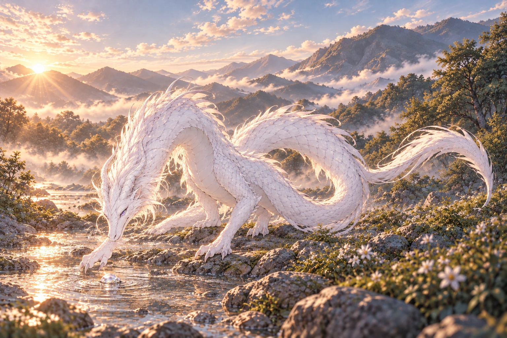

当前作品 / 逐页阅读
T25 · 完整白龙形态的清晨
v03已检查 · 完整白龙形态候选

检查与反馈记录
- 龙头为真正的长吻、鼻孔与颌线，未再沿用人脸或女孩短发；淡紫眼和白角保留识别。
- 四个爪部可见，近前爪探向石头，其他爪有落脚面，没有第五肢或翅膀。
- 取景已拉远，尾尖完整且画幅右侧有留白；尾部与躯干盘曲的遮挡处仍需日后三视图确认，不宣称已解决全部龙形解剖。
- 这是新增完整龙形候选，尚无用户定稿；晨光水岸和白色层叠体表基本保留。
当前作品 / 逐页阅读
v03已检查 · 完整白龙形态候选
